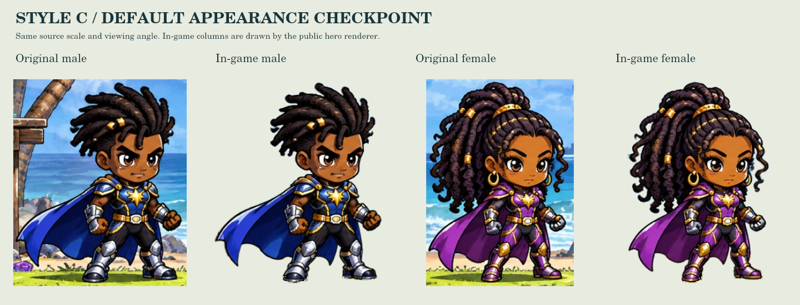
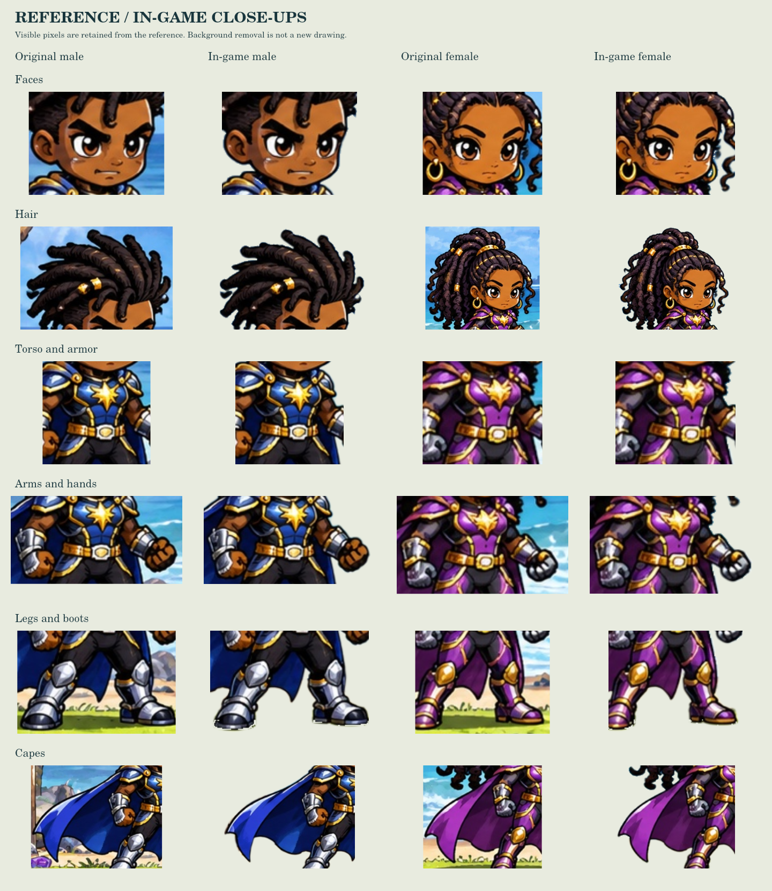

JAMES CLAN COMICS / VISUAL APPROVALStyle C: the default heroes
The original male and female beside their actual in-game standing artwork, at equal height and angle. Full animation production is paused for approval.
Original → in-game

Faces, hair, armor and visible cape details use the original reference pixels. The transparent contour remains an extracted edge, with minor fringes at hair and boot boundaries.
Open full-size comparison · Open approved source
Actual Royale gameplay and HUD
These controls open the real game with a disposable review hero. The environment, HUD, camera, collisions and combat reach are unchanged. Mobile sizes are browser simulations.
Choose a hero and open the game.
Faces, hair, armor, arms, boots and capes

Open full-size close-upsWhat this approval covers
The default standing artwork. Custom hair selections shown in the earlier creator screenshots are retained, but their artwork has not been approved or rebuilt during this checkpoint.
- The source contains one standing angle, about 330 pixels high per hero. Enlargement cannot reveal new source detail.
- Hidden joints, rear views and newly exposed cape cloth are not specified by that image.
- The existing prototype motions and inferred back view remain provisional. No new animation frames were produced.
- All 49 saved hairstyle IDs and customization fields remain available. Existing saves are not reset.